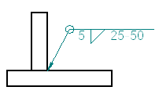
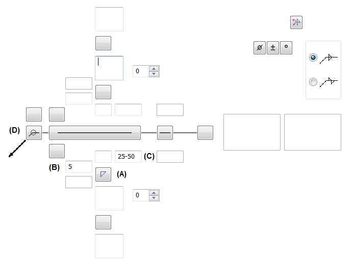
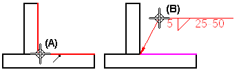

Example: Define a weld symbol
This example illustrates how to create the weld symbol shown below using the Weld Symbol Properties dialog box. This example assumes that the Weld Symbol drawing standard is set to ANSI/ISO/DIN.

The Fillet Weld, Groove Weld, and Label Weld dialog boxes work in a similar manner for placing weldments in an assembly.
-
Choose the Weld Symbol command
 .
.This is located in the Annotation group on the Home tab, or the Sketching tab, or on the PMI tab.
-
If the Weld Symbol Properties dialog box does not automatically display, on the command bar, click Properties.
-
On the General tab (Weld Symbol Properties dialog box), as shown below, do the following:
-
Click the Weld Symbol button below the weld line, and then click the Fillet button. (A)
-
In the Weld Size box, type 5 (B).
-
In the Length of Weld and Pitch box, type 25–50 (C).
-
Set the All Around Symbol option (D).
-
Ensure the other options match the illustration.

The Preview pane depicts the weld symbol as you have defined it.

-
-
As shown below, click an element to position the terminator end of the weld symbol (A).
-
Click in space to define the break line location of the weld symbol (B).

-
You can select the weld symbol and adjust the weld symbol text, weld symbol line width, leader, terminator, and color on the Text and Leader tab in the Weld Symbol Properties dialog box.
-
If you change the weld symbol line width when placing a PMI weld symbol, you must select the Model Size PMI command on the ribbon to see the results.